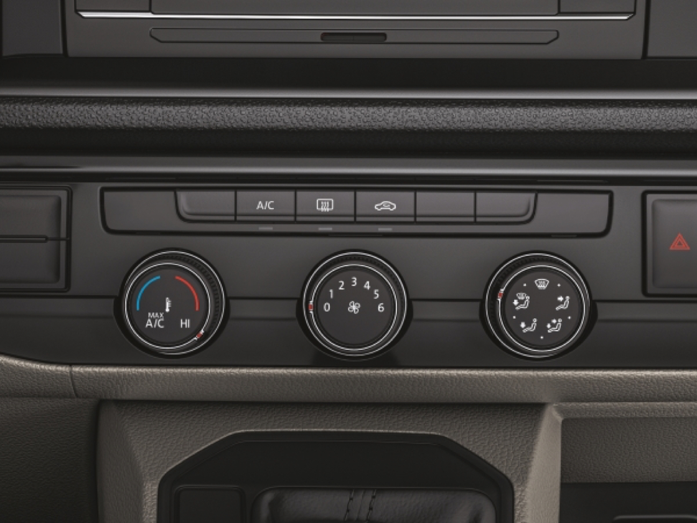
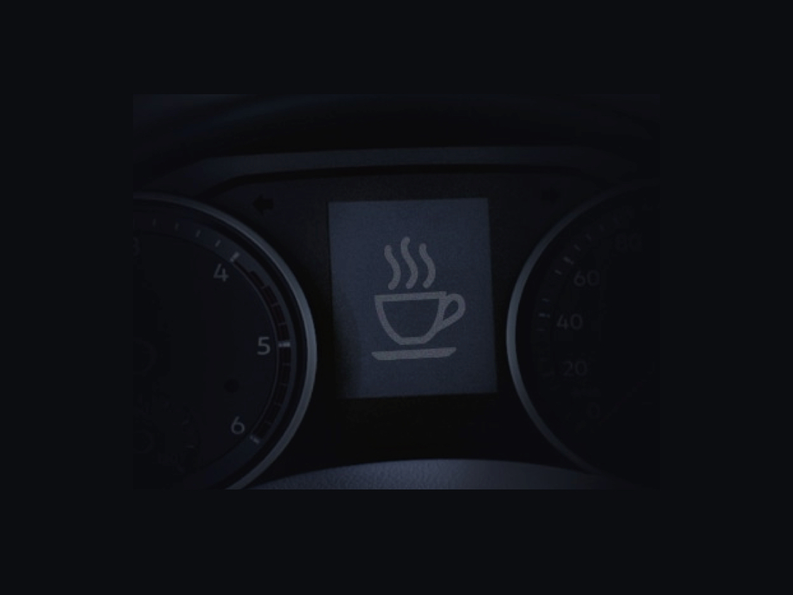

LKSWAGEN
LKSWAGEN
Caddy Life
Karizmatik Transporter
Hem iş hayatınızı hem de gündelik hayatınızı kolaylaştıracak birçok özellikle donatıldı. Baştan aşağı yenilenen tasarımı, gövde rengi tamponu ve yan aynalarıyla yine göz alıcı, diğer tüm özellikleri sayesinde de güvenli ve konforlu.

Yükseklik ayarlı halojen farlar.
Transporter’da farların düzeni karşıdan gelen araçların gözlerini kamaştırmayacak şekilde ayarlandı.
Elektrik kumandalı, katlanabilen ısıtmalı yan aynalar.
Gövde rengindeki dış dikiz aynalar, kontak anahtarı veya kokpitte yer alan ayna kumandası sayesinde tek bir hareketle kolayca katlanabiliyor
Gövde rengi tampon.
Transporter, krom kaplamalı ön ızgarası ve gövde rengi tamponuyla yine göz alıcı
16" çelik jantlar.
Çelik jantlar, Transporter’ın etkileyici dış görünümünü şık bir dokunuşla tamamlıyor.
Kuralları baştan yazmak için var.
Yeni iç mekânı son derece farklı ve kusursuz olan Transporter, bu özelliği sayesinde alışılagelmiş ticari araçların çok ötesinde. Aynı zamanda üstün teknolojik özellikleriyle de sürücüsüyle arasında güçlü bir bağ kuruyor.

Elektronik kontrollü klima.
Elektronik kontrollü klimasıyla Transporter’ın içini kolayca istediğiniz sıcaklık seviyesine getirebilir, dereceyi kendiniz ayarlayabilirsiniz.
Transporter' da fonksiyon ve keyif bir arada.

6,5" dokunmatik ekran.
Yeni 6.5”lik dokunmatik ekrana sahip Composition Colour Radyosu şimdi çok daha. - Bluetooth, USB, AUX-IN ve SD kart girişi özellikleri bulunmaktadır.
7 ileri DSG otomatik vites

7 ileri DSG otomatik vites teknolojisi
Vites aralıklarını milisaniyeler içinde değişecek şekilde küçülterek daha yumuşak vites geçişleriyle sürüş konforunu artırıyor. DSG teknolojisi; manuel vitesin düşük yakıt tüketim özelliğini, ataklık ve sportiflik avantajlarını, otomatik vitesin rahatlığıyla bir araya getiriyor.
Tiptronik özelliği ile manuel vites değiştirme imkanı
DSG otomatik şanzımanda bulunan tiptronik özelliği, sportif kullanımı tercih edenler için vitesi manuel değiştirme olanağı sağlıyor.
Transporter ile gücün keyfini yaşayın.

2.0 TDI 150 PS motor.
6 ileri manuel/7 ileri DSG şanzımanıyla 1500-3000 dv/dk aralığında 340 Nm’lik tork üretiyor. 3250-3750 dv/dk aralığında 150 PS maksimum gücünü korurken uzun mesafeli sürüşleri de keyfe dönüştürüyor.
En büyük konfor, güvenle yolculuk etmektir.

Yorgunluk tespit sistemi.
Uzun yolculuklar sırasında yorulduğunuzu anlayan ve sizi uyaran bir yardımcınız var: Yorgunluk tespit sistemi normal sürüş alışkanlığınız dışında farklı bir hareket algıladığında yolculuğa ara vermeniz için sizi, hem görsel hem sesli olarak uyarıyor.
Yolculuklarınızın her anı güven dolu.

Tüm koltuklarda 3 noktadan gergili emniyet kemeri.
Araçlardaki en önemli güvenlik önlemlerinden 3 noktadan bağlı emniyet kemeri, tüm koltuklarda bulunuyor.
Volkswagen Hakkında Modeller Ve Fiyatlar İletişim Sosyal Medya
İkinci El Araçlar Tüm Modeller Yetkili Satıcı Facebook
Ticari Araçlar SUV Modeller Online Servis Instagram
Satış Sonrası Hizmetler Araç Fiyatları İletişim Ve Destek Twitter
Kampanyalar Aksesuarlar Bilgi Formu Youtube
|